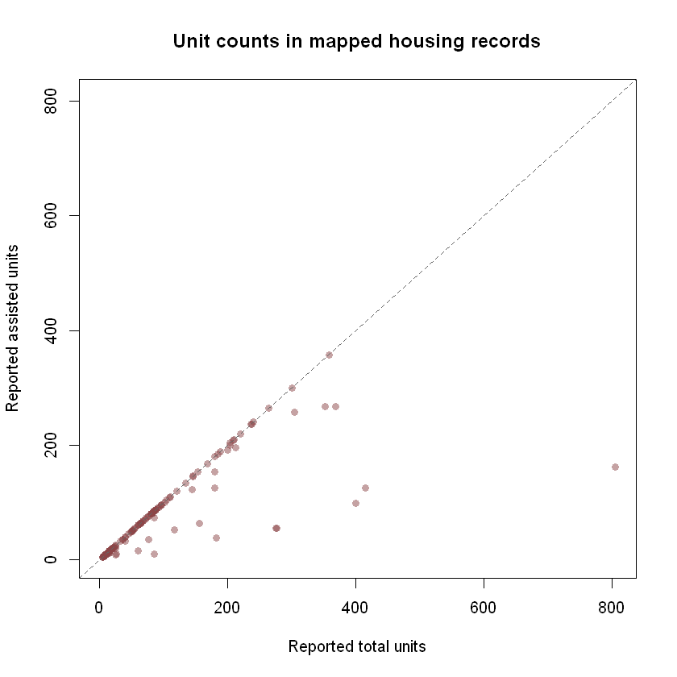

Explore housing and development activity
Source:vignettes/housing-development.Rmd
housing-development.RmdCount Tampa’s active development-case records by neighborhood. Then inspect a separate Pinellas assisted-housing inventory.
Catalog examples run offline. Run live examples in order with internet access. The archived Pinellas chart is dated October 6, 2026.
Set up
Install tampaBayOpenData, knitr for the
catalog table, and ggplot2 for the chart:
install.packages("tampaBayOpenData")
install.packages("knitr") # for the catalog table
install.packages("ggplot2") # optional tutorial dependencyFind a suitable layer
Search the offline catalog:
terms <- c("housing", "permit", "development")
matches <- lapply(terms, function(term) {
found <- tbod_search_datasets(term, source = "checked")
found$search_term <- term
found[, c("search_term", "id", "title", "publisher", "category",
"verified")]
})
catalog_hits <- do.call(rbind, matches)
knitr::kable(catalog_hits, row.names = FALSE)| search_term | id | title | publisher | category | verified |
|---|---|---|---|---|---|
| housing | pinellas-assisted-housing | Pinellas assisted housing | Pinellas County | Housing | 2026-10-05 |
| permit | construction-permits | Permits (active GIS view) | City of Tampa | Development | 2026-09-29 |
| development | development-cases | Active development coordination cases | City of Tampa | Development | 2026-09-29 |
| development | tbrpc-developments-of-regional-impact | Developments of regional impact | Tampa Bay Regional Planning Council | Development | 2026-10-05 |
| development | community-redevelopment | Community redevelopment areas | City of Tampa | Planning | 2026-10-02 |
| development | construction-permits | Permits (active GIS view) | City of Tampa | Development | 2026-09-29 |
| development | pinellas-assisted-housing | Pinellas assisted housing | Pinellas County | Housing | 2026-10-05 |
search_term shows which query found each dataset.
Use tampa-development-cases, Tampa’s active
entitlement-application layer. Permits and assisted-housing inventories
cover different subjects.
case_info <- tbod_dataset_info("tampa-development-cases")
case_info[c("publisher", "title", "source_url", "verified",
"scope_note", "terms")]
#> $publisher
#> [1] "City of Tampa"
#>
#> $title
#> [1] "Active development coordination cases"
#>
#> $source_url
#> [1] "https://arcgis.tampagov.net/arcgis/rest/services/Planning/ActiveEntitlementLocations/FeatureServer/0"
#>
#> $verified
#> [1] "2026-09-29"
#>
#> $scope_note
#> [1] "This is an active application view, not a historical ledger of all development cases. TENTATIVEHEARING and TENTATIVETIME are strings, despite their date-like names. No explicit dataset license was found on this exact FeatureServer service or in the selected public ArcGIS organization catalog. Do not infer the license of a separate MapServer layer."
#>
#> $terms
#> [1] "No explicit dataset license was found for this exact FeatureServer; its service iteminfo licenseInfo is empty. No license is inferred from a separate MapServer or the GeoHub site item. Source: https://arcgis.tampagov.net/arcgis/rest/services/Planning/ActiveEntitlementLocations/FeatureServer/info/iteminfo?f=pjson. City Conditions and Use says data is generally available to copy or distribute, subject to specified exceptions; it does not guarantee accuracy, completeness, or adequacy, and maps are reasonable representations rather than official records. Source: https://www.tampa.gov/about-us/tampagov/conditions-and-use."
case_schema <- tbod_schema("tampa-development-cases")
case_fields <- c("OBJECTID", "RECORDID", "APPSTATUS", "NEIGHBORHOOD",
"CREATEDDATE", "LASTUPDATE")
stopifnot(all(case_fields %in% case_schema$fields$name))
case_schema$fields[match(case_fields, case_schema$fields$name),
c("name", "type", "alias")]
#> # A tibble: 6 × 3
#> name type alias
#> <chr> <chr> <chr>
#> 1 OBJECTID esriFieldTypeOID OBJECTID
#> 2 RECORDID esriFieldTypeString Record ID
#> 3 APPSTATUS esriFieldTypeString Application Status
#> 4 NEIGHBORHOOD esriFieldTypeString Neighborhood
#> 5 CREATEDDATE esriFieldTypeDate Created Date
#> 6 LASTUPDATE esriFieldTypeDate Last UpdateCheck the scope, fields, and terms. verified dates an
endpoint check, not individual records.
Retrieve and inspect current cases
Retrieve all matching rows and stop if the download is incomplete.
cases <- tryCatch(
tbod_get_dataset("tampa-development-cases", fields = case_fields,
total_timeout = 180),
error = function(e) {
stop("Could not retrieve Tampa active development cases: ",
conditionMessage(e), call. = FALSE)
}
)
case_source <- tbod_provenance(cases)
if (!isTRUE(case_source$complete) ||
!isTRUE(case_source$matched_rows == nrow(cases))) {
stop("The result is incomplete; do not interpret the chart.",
call. = FALSE)
}
case_source[c("source_url", "retrieved_at", "matched_rows",
"returned_rows", "integrity", "complete")]
utils::str(cases[, case_fields])
head(cases[, case_fields])cases has one row per map feature, without geometry.
OBJECTID identifies a feature; RECORDID
identifies a case and may repeat. Count feature rows here, not unique
projects or housing units.
Clean and summarize
Trim labels and convert blank values to missing. Use Eastern time for
local dates. CREATEDDATE records creation in the active
view, not completion.
clean_label <- function(x) {
out <- trimws(as.character(x))
out[is.na(out) | !nzchar(out)] <- NA_character_
out
}
case_data <- data.frame(
case_id = clean_label(cases$RECORDID),
status = clean_label(cases$APPSTATUS),
neighborhood = clean_label(cases$NEIGHBORHOOD),
created_date = as.Date(cases$CREATEDDATE, tz = "America/New_York"),
stringsAsFactors = FALSE
)
nonblank_ids <- case_data$case_id[!is.na(case_data$case_id)]
quality <- data.frame(
check = c("Mapped rows", "Missing case ID", "Repeated nonblank case ID",
"Missing status", "Missing neighborhood", "Missing created date"),
rows = c(nrow(case_data), sum(is.na(case_data$case_id)),
sum(duplicated(nonblank_ids)), sum(is.na(case_data$status)),
sum(is.na(case_data$neighborhood)),
sum(is.na(case_data$created_date)))
)
quality
status_counts <- sort(table(case_data$status, useNA = "ifany"),
decreasing = TRUE)
status_countsquality counts missing labels and ID occurrences after
the first. Missing-value counts can overlap. status_counts
counts rows by status.
Investigate repeated case IDs before removing rows; they may mark different locations.
Chart the mapped neighborhoods
Plot the ten neighborhoods with the most mapped rows. Rows without
neighborhood labels remain in quality but are excluded from
the chart.
if (!requireNamespace("ggplot2", quietly = TRUE)) {
stop("Install ggplot2 to draw the neighborhood chart.", call. = FALSE)
}
named_neighborhoods <- case_data$neighborhood[
!is.na(case_data$neighborhood)
]
if (!length(named_neighborhoods)) {
message("The retrieved records have no neighborhood labels to chart.")
} else {
neighborhood_counts <- as.data.frame(table(named_neighborhoods),
stringsAsFactors = FALSE)
names(neighborhood_counts) <- c("neighborhood", "mapped_rows")
neighborhood_counts <- neighborhood_counts[
order(-neighborhood_counts$mapped_rows,
neighborhood_counts$neighborhood), , drop = FALSE
]
top_neighborhoods <- head(neighborhood_counts, 10)
top_neighborhoods$neighborhood <- factor(
top_neighborhoods$neighborhood,
levels = rev(top_neighborhoods$neighborhood)
)
print(top_neighborhoods)
neighborhood_plot <-
ggplot2::ggplot(top_neighborhoods,
ggplot2::aes(x = neighborhood, y = mapped_rows)) +
ggplot2::geom_col(fill = "#277DA1") +
ggplot2::coord_flip() +
ggplot2::labs(
title = "Mapped active development cases by Tampa neighborhood",
subtitle = paste("Top 10 labels; retrieved",
format(case_source$retrieved_at, "%Y-%m-%d", tz = "UTC")),
x = NULL, y = "Mapped feature rows",
caption = "Source: City of Tampa active development coordination cases"
) +
ggplot2::theme_minimal(base_size = 12)
print(neighborhood_plot)
}The chart describes the active view at retrieval time. It cannot show completed housing or a full historical trend.
Look at the Pinellas housing inventory
Inspect pinellas-assisted-housing for reported total and
assisted units. Review repeated parcels before adding unit counts.
housing_info <- tbod_dataset_info("pinellas-assisted-housing")
housing_info[c("publisher", "source_url", "scope_note", "terms")]
#> $publisher
#> [1] "Pinellas County"
#>
#> $source_url
#> [1] "https://pinellas-egis.maps.arcgis.com/home/item.html?id=2277d597855b4fba9e4c3e892bc5ddd7"
#>
#> $scope_note
#> [1] "Program participation, assisted-unit counts, and subsidy expiration may change. This layer does not establish current eligibility, availability, or a complete affordable-housing inventory."
#>
#> $terms
#> [1] "The official County item offers data as-is for reference, says it is not of survey precision, and does not name an unrestricted reuse license. Source: https://pinellas-egis.maps.arcgis.com/sharing/rest/content/items/2277d597855b4fba9e4c3e892bc5ddd7?f=pjson"
housing_fields <- c("OBJECTID", "PID", "DEVELOPMENT", "CITY",
"HOUSINGPROGRAM", "TOTALUNITS", "ASSISTEDUNITS")
housing_schema <- tbod_schema("pinellas-assisted-housing")
stopifnot(all(housing_fields %in% housing_schema$fields$name))
housing_schema$fields[match(housing_fields, housing_schema$fields$name),
c("name", "type", "alias")]
#> # A tibble: 7 × 3
#> name type alias
#> <chr> <chr> <chr>
#> 1 OBJECTID esriFieldTypeOID OBJECTID
#> 2 PID esriFieldTypeString Parcel Number
#> 3 DEVELOPMENT esriFieldTypeString Development Name
#> 4 CITY esriFieldTypeString City
#> 5 HOUSINGPROGRAM esriFieldTypeString Housing Program
#> 6 TOTALUNITS esriFieldTypeSmallInteger Total Units
#> 7 ASSISTEDUNITS esriFieldTypeSmallInteger Assisted Units
housing <- tryCatch(
tbod_get_dataset("pinellas-assisted-housing",
fields = housing_fields, total_timeout = 180),
error = function(e) {
stop("Could not retrieve the Pinellas assisted-housing layer: ",
conditionMessage(e), call. = FALSE)
}
)
housing_source <- tbod_provenance(housing)
if (!isTRUE(housing_source$complete) ||
!isTRUE(housing_source$matched_rows == nrow(housing))) {
stop("The housing inventory result is incomplete.", call. = FALSE)
}
head(housing[, housing_fields])PID identifies the parcel; each row represents a source
polygon.

Illustrative snapshot from the Pinellas County assisted-housing layer, retrieved October 6, 2026. Each point is a mapped record with usable unit counts, not necessarily a distinct housing site. This image is historical; run the live code above to inspect current records. Source: Pinellas County ArcGIS layer.
The diagonal marks equal assisted and total units. These counts do not show current vacancies.
See the Pinellas example for unit checks and repeated parcel IDs.
Save and interpret
Keep case_source with your results to record the source
and retrieval time.
Tampa’s active view excludes earlier cases that have left it. Pinellas covers a housing program inventory, without confirming eligibility or availability. See coverage for source limits.